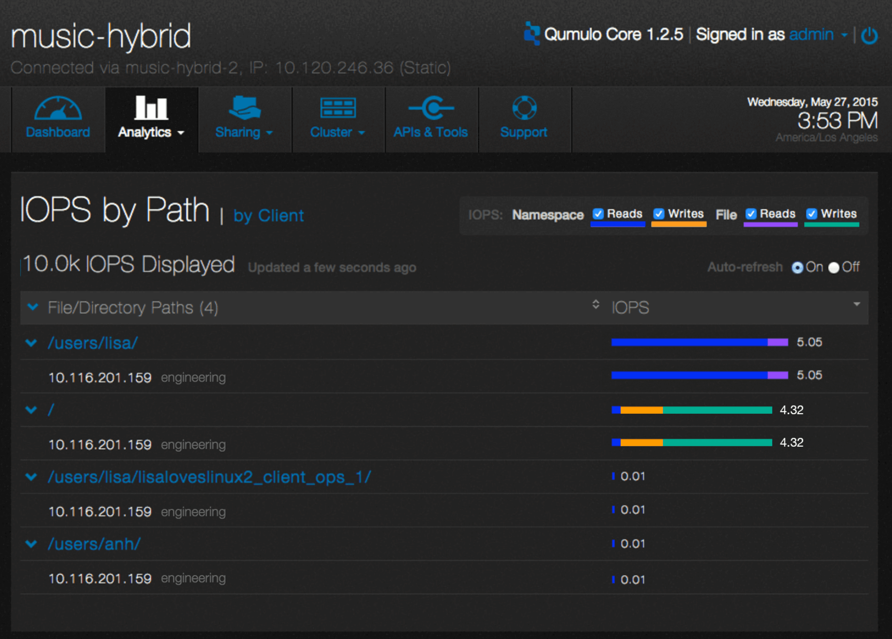

System Activity Visualization
Project Introduction
Visualizing the system performance data not only solves a long standing headache for users, but differentiates our product from our competitors. As the UX designer of this project, I lead the design efforts of this whole project from conception to launch meanwhile closely collaborating with stakeholders.
Role
UX Designer
Duration
3 Months (Nov/2014-Feb/2015)
Skills
Info Visualization, Interaction Design, Usability Testing
Background
Traditionally, data storage software is like a black box. It's very hard for storage administrators to figure out how the storage is being used by their end users.
What we do at Qumulo differently is that our software is not only for helping storage administrators to manage their storage but also give them insights on how much the data are used and how are they used. We are the industry leader in terms of providing simple data storage solution with realtime analytics and information visualizations.
One of Visualization Examples in Qumulo Core
Design Process
As the designer of this project, I worked closely with PM, Data Visualization Lead, Front-end engineering team in the whole design process. I collaborated with PM to define the project scope and user stories. I discussed with Data Viz Lead about available data sets and solutions. I conducted usability testing with users and iterated the design based on usability tests findings. Later after we shipped the first version, we released the second version which is an incremental enhancement based on the first version.
1. User Research
The PM has done the research part. I started this project with understanding users pain points and what we want to achieve through the visualization.
Users Pain Point
Our storage admin Gerald often hears his end users complain that the system is too slow. To troubleshoot the system, Gerald needs to know which clients or projects are actively taking over the resources. Without any visibility on it, it usually takes Gerald a long time to figure out the problem. It also brings huge impacts on end users’ productivity too.
This lack of visibility annoys me, if someone comes to me and says: who is using the most amount of resources in the system? I could not tell you based on my current data.
Goal of Visualization
As the leader in data-aware software industry, Qumulo wants to create a visualization that empower Gerald with visibility of who are the most active clients and projects impacting the system performance, thus improve his troubleshooting efficiency as well as his end users working productivity.
Solutions
Which clients are generating the most performance activity and which directories those clients are accessing.
Which directories have the most performance activity and who are the clients accessing those directories
To troubleshoot storage performance issues, Gerald needs to know those information:
2. Visualize and Prototype
What data are performance activity related?
IOPS, latency and throughput. Among those three datasets users expressed the most interest in IOPs. We choose to show IOPS data as the first release of our product.
The Data Visualization Lead came up with this raw data prototype to show me what data I can utilize for visualization.
Raw Data Prototype
Design Strategy
It follows the Shneiderman mantra "overview first details on demand”: users come to this page to oversee the trend first. If there is any outstanding data they would like to investigate further using expanding and sorting function.
Encode variables into visual cues: color, geometric shapes, area, shape and length
Group secondary data and collapse them by default
Design solution
3. Usability Testing
With this set of prototype, I started usability testing with 10 users.
color contrast issue, deep purple VS light purple
Refresh problem
Top clients w/ hostname
relative timestamp instead of absolute time
Issues found through testing
4. We Shipped!
This visualization is one of our product core features when we launched our product to market. Because we already had plenty of customers when we launched the product, after they used this feature, they absolutely loved it! Here are customer quotes

First Release of Design - Activity by Client
First Release of Design - Activity by Path
5. Incremental Releases
Shortly after we released the first version, we released the version with throughput info.
More projects
Seattle, U.S.
(206) 953 5592
joyce90829@gmail.com